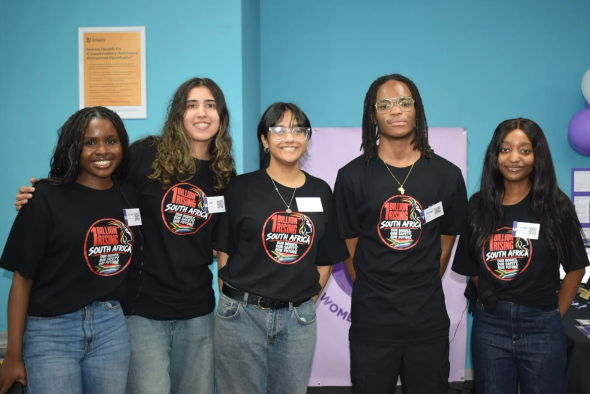

Philisa Abafazi Bethu
Project lead · Five-person team · 2026
Philisa Abafazi Bethu, meaning “Heal Our Women” in isiXhosa, is a non-profit organisation in Lavender Hill, Cape Town, supporting women and children. We met with their team to understand how they actually work, then built two products for them: an Android app where volunteers manage tasks, join programmes and reach coordinators, and a web platform opening up their support services and resources to the community. I gathered the requirements from their staff, translated their operational problems into system requirements, and ran the sprints, task allocation and code review across the team. We set up an expo to present the work back to them.